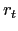
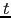
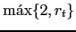

required_registers
para las diferentes clases Value, Operation,
ASSIGN, PRINT, STATEMENTS, etc.
Asi mismo deberá escribir el método gen_code para las diversas
clases: Value, Operation, ASSIGN, PRINT,
STATEMENTS, etc.
Recuerde que los temporales usados durante la generación de código
deben ubicarse en una zona que no esté en uso.
| Fuente | Objeto |
string a,b; a = "hola"; b = a; p b |
1 LSTRG R0, 4, 4 2 STORES 0, R0 # a 3 LOADS R0, 0 # a 4 STORES 2, R0 # b 5 LOADS R0, 2 # b 6 PRNTS R0 |
Asuma que los registros pueden contener dos direcciones de memoria
(línea 1). La instrucción LSTRG R0, a, b carga las constantes
(direcciones)
a y b en el registro.
La constante "hola" ocupa en la posición final
en la que se colocan los contenidos de $data un desplazamiento
de 4 y ocupa 4 palabras.
Las instrucción LOADS R, a carga las dos palabras en las direcciones
a y a+1 en el registro R.
La instrucción STORES a, R se encarga de que las dos palabras
en la dirección a queden referenciando
una cadena igual a la apuntada por el registro R.
La instrucción PRNTS imprime la cadena apuntada
por el registro. En una situación mas realista instrucciones como
STORES a, R y PRNTS probablemente serían llamadas
a funciones/servicios del sistema o de la librería para soporte
en tiempo de ejecución asociada al lenguaje.
$ cat test18.tutu int a,b,c; a = a + (b + c)
El código producido por el compilador es:
LOADM R0, 0 # a LOADM R1, 1 # b PLUSM R1, 2 # c PLUSR R0, R1 STORE 0, R0 # a
En este caso, la expresión a + (b + c) corresponde a un árbol
que casa con el patrón árbol
Donde  es el número de registros requeridos por  . En tales casos es posible sacar ventaja de la conmutatividad de la suma y transformar el árbol
Observe que mientras el primer árbol requiere  registros, el segundo requiere registros, que en general es menor. Esta transformación invierte la traducción:
traduce(t) ADDM $RSTACK[0], dirección de ID
que daría lugar a:
LOADM R0, 1 # b PLUSM R0, 2 # c PLUSM R0, 0 # a STORE 0, R0 # a
la cual usa una instrucción y un registro menos.
Usando match_and_transform modifique el generador
de código para que, después de la fase de cálculo del número
de registros requeridos, aplique esta
transformación sobre los nodos conmutativos cuyo hijo izquierdo
sea un identificador y su hijo derecho requiera al menos un registro.